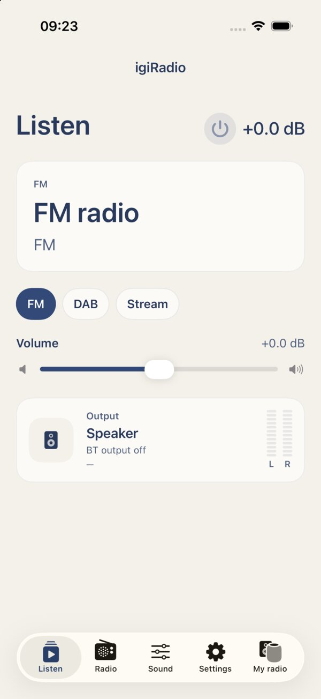

igiRadio
The iPhone and iPad app that finds DigiRadio on your home network and controls all of it.
Beta on TestFlight
To try it, ask for an invite by opening a GitHub issue.
To try it, ask for an invite by opening a GitHub issue.
What it does
- Listen: power and standby, volume, FM, DAB or web radio source, VU meter and Bluetooth output.
- Radio: tuning, FM and DAB scan, presets stored on the radio, RDS and DAB text with artwork.
- Sound: equaliser, audio presets, bass and stereo, DSP parameters.
- Alarms and sleep timer.
- Share: send a web radio link from Safari or another app straight to the radio.
- Siri and Shortcuts: turn on, standby, tune a preset, change volume, start web radio, ask what's playing.
- Setup: the first time, the app finds the radio over Bluetooth and gives it your Wi-Fi network.
- Updates: checks for new firmware and installs it over Wi-Fi.
Requirements
An iPhone or iPad and a DigiRadio on the same Wi-Fi network. The app is in English and Italian.
An Android version is planned.